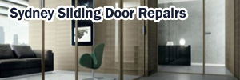

Our specialty. We replace rollers, repair and re-cap tracks, realign doors and fix locks so your door glides effortlessly. Over 40 door types serviced.
Learn more →Expert diagnosis and repair of hydraulic surface-mounted closers, overhead transom closers and floor spring closers.
Learn more →Commercial and domestic door closer service for aluminium, timber and synthetic doors right across the Sydney metro area.
Learn more →Supply and professional installation of the right door closer for your door, correctly adjusted for safe, smooth closing.
Learn more →
Doors are all we do. Since 1992 we've focused exclusively on sliding doors and door closers, which means deep expertise, the right parts on the van, and repairs that last.
Same-day and next-day appointments are often available across Sydney.